| Imagen |
Nombre |
Rol |
Rasgos |
Curiosidades |
Símbolo en el círculo |
 |
Dipper Pines |
Protagonista, hermano gemelo de Mabel. |
Curioso, analítico, tenaz. |
Encuentra el Diario 3 y guía las investigaciones. |
 |
| 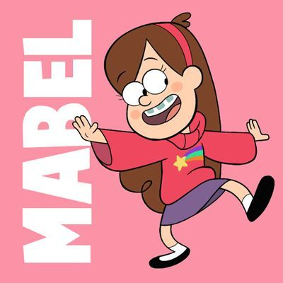 |
Mabel Pines |
Hermana gemela de Dipper. |
Alegre, creativa, cariñosa. |
Adora los suéteres; resuelve con intuición. |
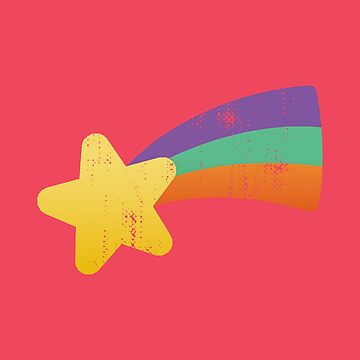 |
 |
Tío Stan |
Tío abuelo, dueño de la Cabaña del Misterio. |
Gruñón, oportunista, protector. |
Esconde secretos familiares. |
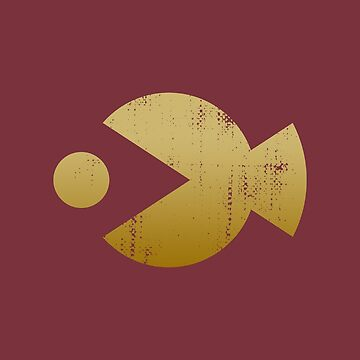 |
| 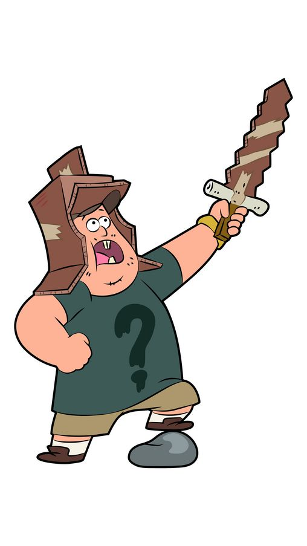 |
Soos Ramirez |
Empleado de la Cabaña del Misterio. |
Amable, bromista, servicial. |
Figura protectora para los gemelos. |
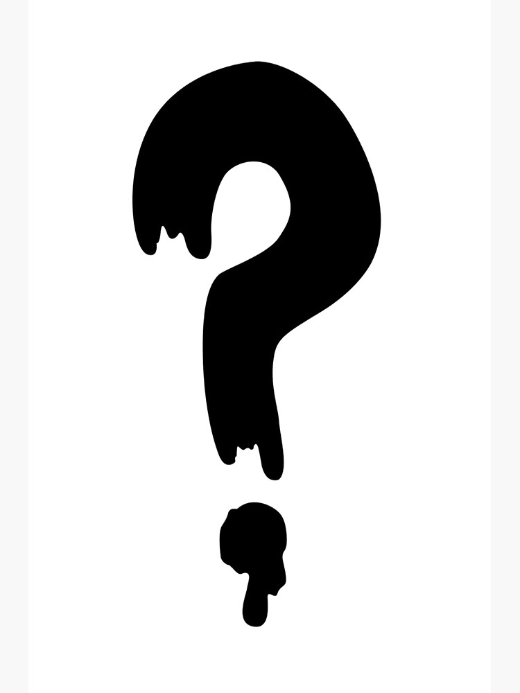 |
| 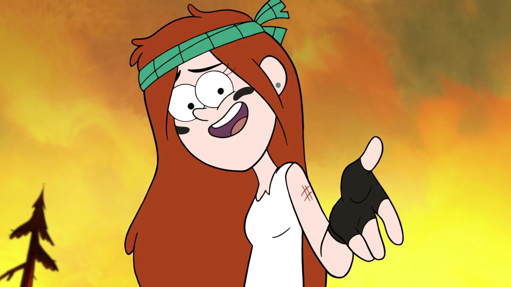 |
Wendy Corduroy |
Amiga de los gemelos; trabaja en la cabaña. |
Relajada, valiente, hábil. |
Le gusta la música y la vida al aire libre. |
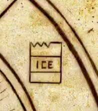 |
| 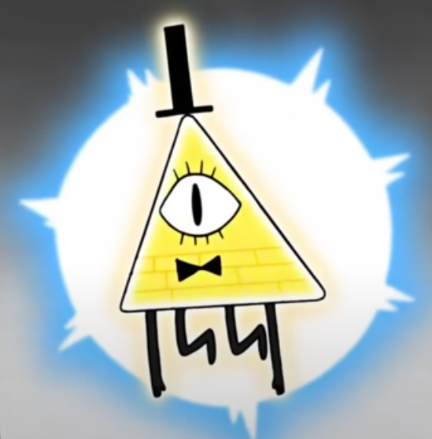 |
Bill Cipher |
Antagonista sobrenatural. |
Enigmático, manipulador, poderoso. |
Aparece en sueños y hace pactos engañosos. |
 |
| 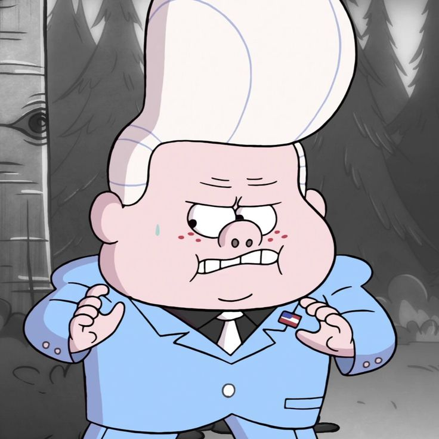 |
Gideon Gleeful |
Niño estafador y rival de los gemelos. |
Carismático, ambicioso, resentido. |
Quiere controlar el pueblo con engaños. |
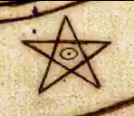 |
| 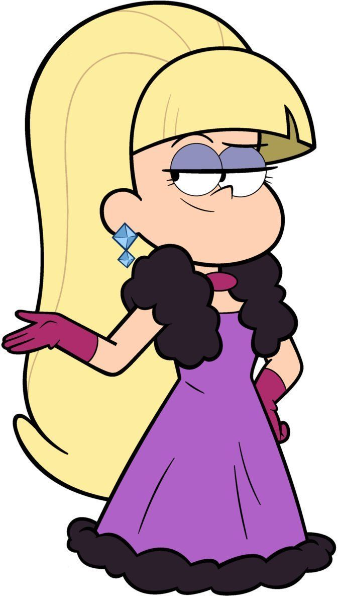 |
Pacifica Northwest |
Rival social de Mabel. |
Orgullosa, compleja, en evolución. |
Su historia trata sobre redención personal. |
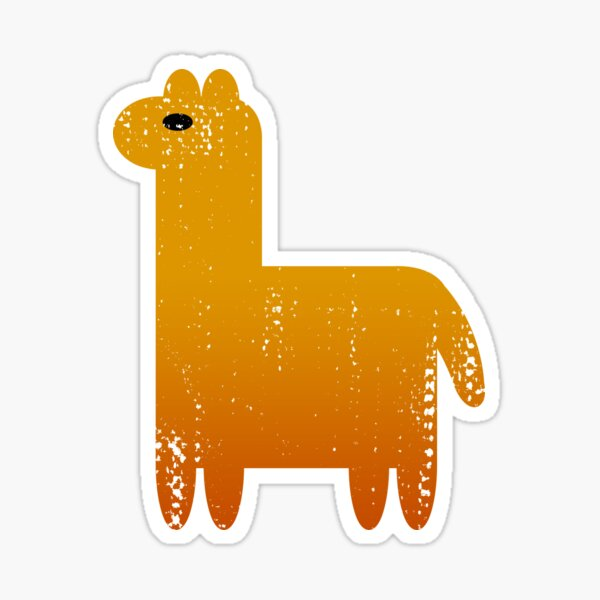 |
| 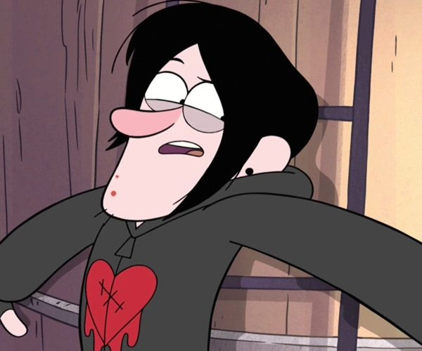 |
Robbie Valentino |
Adolescente de Gravity Falls. |
Sarcástico, rebelde, inseguro. |
Toca la guitarra; ex de Wendy. |
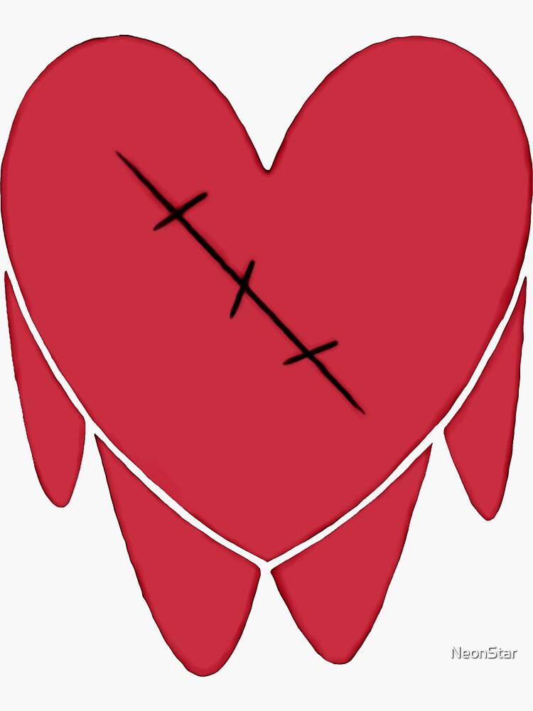 |
 |
Old Man McGucket |
Inventor excéntrico del pueblo. |
Desaliñado, paranoico, ingenioso. |
Creador de aparatos y parte del pasado oscuro. |
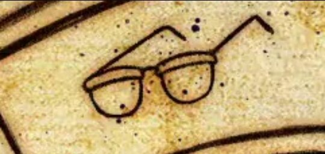 |
| 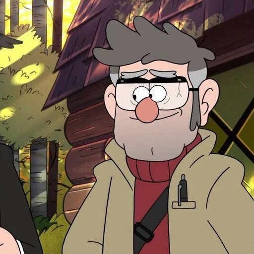 |
Stanford Pines (Ford) |
Autor de los diarios y hermano de Stan. |
Inteligente, reservado, obsesivo. |
Viaja entre dimensiones y ayuda a enfrentar a Bill. |
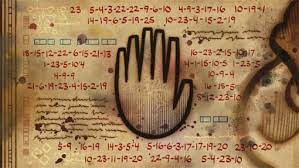 |